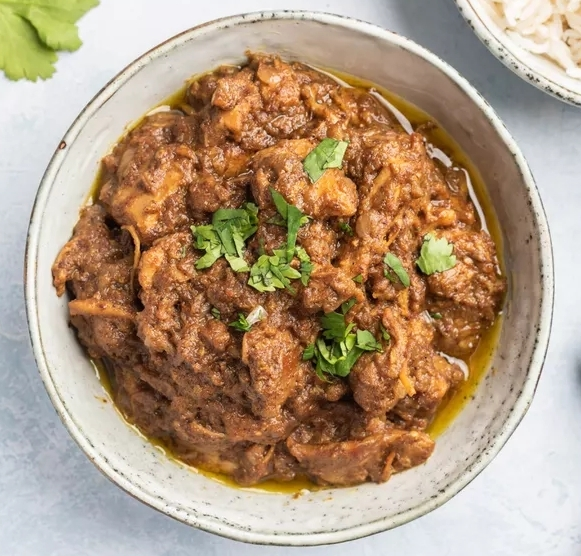

Chicken Sukka: Dry Chicken Curry
Chicken sukka from coastal, western India combines elements and ingredients of both the Malabari and Goan styles of cooking. It combines a very fragrant spice mixture with onions, ginger and garlic and the recipe is finished with coconut cream, creating a smooth, thick texture.
Though it is a dry dish with very little gravy, chicken sukka tastes really nice served with just plain boiled rice. You can even team it with Indian rice cakes or flatbreads like hot chapatis or paranthas. Complete the meal with a vegetable such as steamed broccoli or roasted couliflower.
Ingredients:
- 6 cloves
- 3 (1-inch) pieces cinnamon stick
- 1/2 teaspoon cardamom seeds
- 1/2 teaspoon fenugreek seeds
- 1 teaspoon fennel seeds
- 1/2 teaspoon black peppercorns
- 1/4 teaspoon turmeric powder
- 1/2 teaspoon red chili powder, optional
- 2 teaspoons cumin powder
- 3 teaspoons coriander powder
- 3 to 4 tablespoons vegetable oil, or canola or sunflower oil
- 1 large or 2 medium onions, chopped very fine
- 2 tablespoons ginger paste
- 2 tablespoons garlic paste
- 1 pound chicken thigh fillet, boneless chicken thigh, cut into 2-inch chunks
- Salt, to taste
- 1 (13 1/2-ounce) can coconut cream
- 1 teaspoon sugar
- 3 teaspoons white vinegar
- Fresh cilantro, chopped, for garnish
Steps:
- Grind the cloves, cinnamon, cardamom, fenugreek seeds, fennel seeds, and peppercorns together into a fine powder in a spice grinder, clean, dry coffee grinder, or food processor.
- In a small bowl, mix the turmeric, red chili (if using), cumin, and coriander powders with the spice mixture and stir to blend. Set aside.
- Heat the cooking oil in a deep, heavy-bottomed pan over medium heat. When the oil is hot, add the onions and fry until golden. Stir often to prevent them from burning or sticking to the bottom of the pan.
- Add the ginger and garlic pastes and sauté until browned, for 2 to 3 minutes.
- Add the chicken and salt to taste. Mix well and cook, stirring frequently, until the chicken is well browned on all sides.
- Add the prepared powdered spice mix and stir well. Cook until the spices begin to give off a cooked aroma ("raw" spices have a sharp, pungent aroma as compared to "cooked" spices). Add the coconut cream and mix well.
- Cover the pan, lower the heat to simmer, and cook, stirring every 2 to 3 minutes to prevent burning. After 10 minutes, remove the cover and cook until most of the gravy has dried up, turned thick, and is a dark brown color, stirring as needed.
- Add the sugar and vinegar and mix well. Cook for 2 to 3 minutes more and then turn off the heat. Check the seasoning and add salt if needed.
- Garnish the chicken sukka with chopped cilantro and serve with plain boiled rice, if desired.